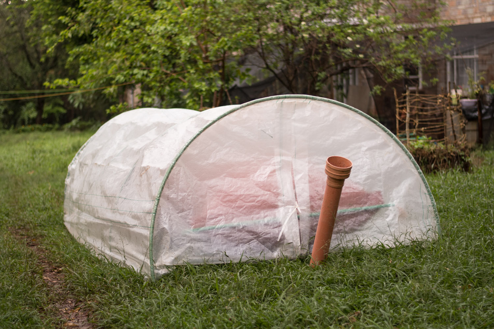
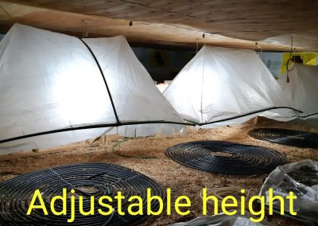
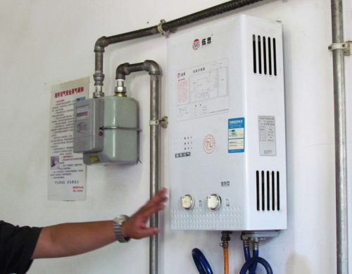

Our Products
Explore Our Biogas Solutions
Discover the full range of Flexi Biogas technologies and services. From organic fertilizer to advanced waste management, our solutions are designed for sustainability, efficiency, and real-world impact. Click on any service below to learn more, see real installations, and find the perfect fit for your needs.
Large Capacity Biogas
T-REX Technology Systems are advanced, modular biogas plants designed for high-capacity energy needs in farms, schools, hotels, and institutions. These systems use a unique cross-flow fermentation process, ensuring complete digestion of all biodegradable materials—not just animal dung. With a minimum retention period of 25-40 days, T-REX delivers maximum gas output and a constant supply of rich organic fertilizer. Prefabricated for quick installation, scalable to any size, and simple to operate, T-REX is the ideal solution for large-scale waste management and sustainable energy production.
Read More

Domestic Biogas
Flexi Biogas Technology offers a no-construction, plug-and-play biogas solution for homes and small businesses. Prefabricated and installed in as little as three hours, these systems run on any biodegradable material—animal dung, kitchen waste, garden weeds, or market refuse. Highly efficient, Flexi Biogas units require just a fraction of the feedstock used by conventional systems, producing clean cooking gas and nutrient-rich organic fertilizer in days. The technology is user-friendly, quick to start, and adaptable to a wide range of environments, making sustainable energy accessible to all.
Read More
Bio-San-Gas Technology
Bio-San-Gas Systems provide a hygienic, sustainable solution for human waste management in institutions and communities. These expertly crafted, prefabricated systems never fill up or require emptying, eliminating odors and groundwater contamination. Suitable for all terrains, Bio-San-Gas units convert waste into biogas for heating and power, while producing safe, nutrient-rich liquid fertilizer for irrigation. The system is cost-effective, easy to install, and ideal for schools, churches, markets, and homes seeking a clean, eco-friendly sanitation alternative.
Read More
CopyCat Farming Model
The CopyCat Farming Model is a climate-smart, replicable farming system that leverages biogas and bio-fertiliser to promote sustainable agriculture. By integrating innovative irrigation and fertilisation techniques, this model empowers farmers to increase productivity, reduce costs, and build resilience to climate change. Our demonstration sites across Kenya showcase practical solutions that communities can easily adopt, helping to improve food security, livelihoods, and environmental sustainability.
Read More

Chicken Brooding
Our biogas-powered Chicken Brooding systems offer a sustainable, cost-effective alternative to traditional brooding methods. Using radiant floor heating or pollutant-free space heaters, these systems maintain optimal temperatures for chicks while reducing energy costs by up to 75%. The closed-cycle design manages waste efficiently, producing valuable organic fertilizer and clean energy. Suitable for both commercial and domestic setups, our brooding solutions improve poultry health, reduce pollution, and support integrated, circular farming practices.
Read MoreDrying Fruits
Our biogas-powered Drying Fruits & Vegetables systems help farmers preserve their harvest, reduce post-harvest losses, and add value to their produce. The dryers use biogas burners to gently dehydrate fruits and vegetables, extending shelf life and enabling sales during off-seasons. Suitable for a wide range of produce—mangoes, bananas, tomatoes, greens, and more—these systems boost farmer incomes and prevent food waste. Dried products retain nutrients, offer health benefits, and provide new market opportunities for smallholders and agribusinesses.
Read More
Bio Fertiliser
Our Bio Fertiliser is a nutrient-rich organic solution produced from biogas digestate, designed to boost soil fertility and crop yields. Unlike chemical fertilizers, it improves soil structure, increases water retention, and provides essential micro-elements in a plant-available form. Bio Fertiliser can be used as a basal manure, foliar spray, or insect repellent, and is proven to increase crop production by 10–30%. It is safe for all crops, enhances seed germination, and reduces the need for synthetic inputs, making it ideal for sustainable agriculture and eco-friendly farming.
Read More

Value Addition
Value Addition unlocks the full potential of biogas by enabling innovative uses beyond cooking. Our solutions include biogas ovens for baking and grilling, water heaters for hygiene and showers, and systems for food processing, irrigation, and electricity generation. By integrating biogas into diverse farm and household activities, we help users maximize energy efficiency, reduce costs, and create new income streams. Value Addition empowers communities to adopt sustainable, circular practices and realize the many benefits of renewable biogas technology.
Read MoreCorporate Social Responsibility
Our Corporate Social Responsibility (CSR) initiatives are woven into every aspect of our work. We champion environmental stewardship by reducing carbon emissions and promoting sustainable waste management. Through social impact programs, we empower communities with education, training, and access to clean energy. Our economic empowerment efforts create jobs, support local businesses, and help families save on energy costs. Together, these pillars drive positive change, improve livelihoods, and protect our planet for future generations.
Read More